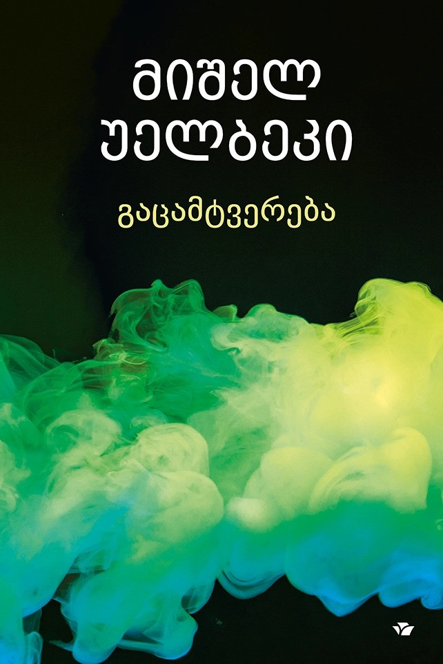
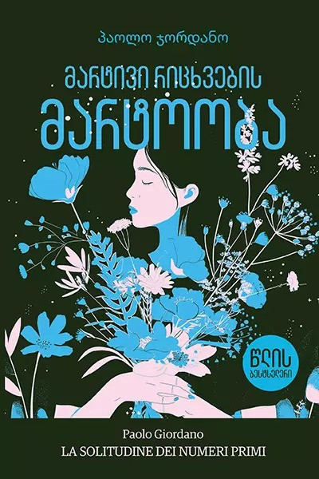
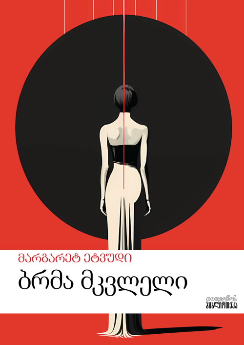
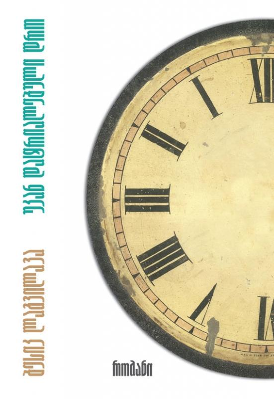

Book 1

მოქმედება უახლოეს მომავალში ხდება: 2026 წელია, მომდევნო წელს საფრანგეთში საპრეზიდენტო არჩევნები უნდა ჩატარდეს, მაგრამ მოქმედი პრეზიდენტი კენჭს ვეღარ იყრის, რადგან ორი საპრეზიდენტო ვადა უკვე ამოწურული აქვს. ამიტომ ის უნდა შეცვალოს ადამიანმა, რომელსაც სრულიად ენდობა და თანაც, სამომავლოდ, თანამდებობაზე დასაბრუნებლად პრობლემას არ შეუქმნის. ამ შინაურ პოლიტიკურ დაძაბულობას ერთვის ტერორისტული თავდასხმები მსოფლიოს სხვადასხვა წერტილში და ინტერნეტში გავრცელებული უცნაური ვიდეოები, მათ შორის – ყალბიც, თუმცა შემაშფოთებელი, რადგან საფრანგეთის ეკონომიკის მინისტრის თავის მოკვეთას ასახავს.
Book 2

"მატია ფიქრობს, რომ ის და ალიჩე მარტივი რიცხვები არიან, მარტოსული და დაკარგული, ის რიცხვები, რომლებიც გვერდიგვერდ კი დგანან, მაგრამ არც იმდენად, რომ ერთმანეთს შეეხონ, თუმცა მატიას მისთვის ეს არასოდეს უთქვამს... არც აქვს აზრი თქმას, რადგან ორივეს ყმაწვილობაში იმდენი ტკივილი იყო, ფიზიკური თუ სულიერი, რომ ერთად ყოფნა დიდი ტვირთი იქნება, თუმცა კი სცადეს... ""მარტივი რიცხვების მარტოობა"" პაოლო ჯორდანოს პირველი რომანია, რომელიც გამომცემლობა “მონდადორიმ“ 2008 წელს გამოსცა. მატიასა და ალიჩეს სიყვარულისა და მარტოობის ამბავმა სწრაფად დაიპყრო იტალიელი მკითხველის გული. მას შემდეგ წიგნი 36 ენაზე ითარგმნა, ხოლო 2010 წელს გადაიღეს ამავე სახელწოდების ფილმი. რომანმა 2008 წელს მოიპოვა პრემიები ""Strega"" და ""Campiello-Opera Prima"".
Book 3

რომანისთვის „ბრმა მკვლელი“ კანადელ მწერალ მარგარეტ ეტვუდს (1939) 2000 წელს ბუკერის პრემია მიენიჭა, ჟურნალმა „თაიმმა“ კი წიგნი იმავე წლის საუკეთესო რომანად გამოაცხადა და 100 საუკეთესო ინგლისურენოვანი ნაწარმოების სიაში შეიტანა. ეს სქელტანიანი წიგნი, რომელიც ოჯახური საგის, სამეცნიერო ფანტასტიკის, ისტორიული რომანის, სასიყვარულო ისტორიისა და დეტექტივის ელემენტებისგან შედგება, ჩინურ ყუთს ჰგავს: დების - აირის და ლორა ჩეიზების ამბავს თავად აირისი მოგვითხრობს, თუმცა რომან „ბრმა მკვლელში“ ამავე სახელწოდების კიდევ ერთი რომანია...
Book 4
''სუნამო“ პირველად 1985 წელს შვეიცარიაში გამოიცა. წიგნი რამდენიმე ათეულ ენაზეა ნათარგმნი და თანამედროვე გერმანულენოვან ლიტერატურაში ერთ-ერთი ყველაზე ცნობილი რომანია. მოქმედება მეთვრამეტე საუკუნის საფრანგეთში ვითარდება. რომანის მთავარი გმირი, ჟან-ბატისტ გრენუი, უცნაური, ყველასგან გამორჩეული ადამიანია. იგი გამძაფრებული ყნოსვითაა დაჯილდოებული. მას შეუძლია, ისეთი სურნელიც კი შეიგრძნოს, რომელიც ჩვეულებრივი ადამიანისთვის შეუმჩნეველია და, შესაბამისად, არც სახელი აქვს. ნებისმიერი არომატი მისთვის თანაბრად საინტერესოა და გრენუიც გამძაფრებული ინტერესით შეისწავლის მათ. ეს არის სრულყოფილი სუნამოს შექმნისა და ძალაუფლების ვნებით შეპყრობილი გენიალური პარფიუმერის ისტორია, რომელიც, საბოლოოდ, სწორედ ამ სრულყოფილების მსხვერპლი ხდება.
Book 5

ბესიკ ლაგვილავა დროის ფენომენს უკვირდება, მის უცნაურობასა და ამოუხსნელობას, მის გარეგნულ სიმდორესა და შინაგან სისწრაფეს, წუთის ხანგრძლივობასა და წუთისოფლის ხანმოკლეობას, ტარიელ ჭანტურიას მახვილგონივრული სტრიქონისა არ იყოს, უკვირდება და ანალიტიკურადაც განსჯის, განსჯის და სწორედ მას აქცევს მთავარ ძარღვად კომპოზიციური აღნაგობისა.